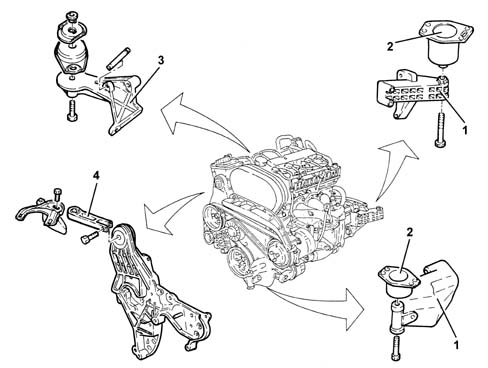
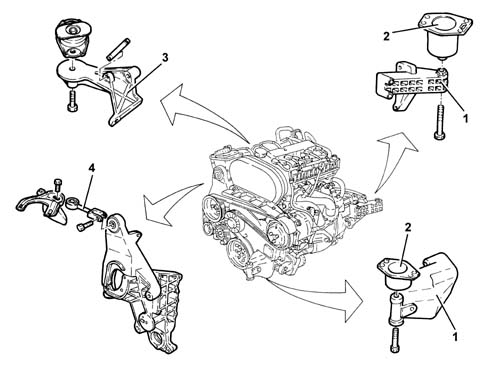
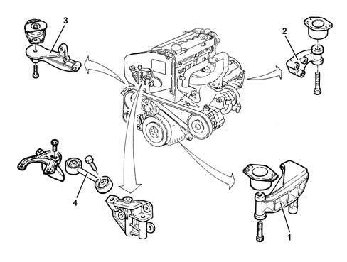
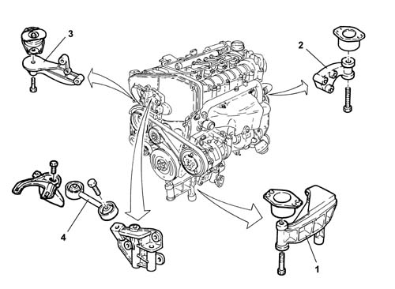

Introduction - POWER UNIT SUPPORTS
- Path
- Descriptions > 10 ENGINE > 1008 POWER UNIT SUPPORTS > Introduction - POWER UNIT SUPPORTS
- Kind
- system description
- Applies to
- all engines; all production periods
- Interactive page
- https://sloeber94.github.io/elrnDB-a147/en/#/3026083
Applies to: engines: 1.6 TS; all production periods
CONSTRUCTION FEATURES
The power unit mounting is of the 'suspended' type.
The unit is attached to the bodywork by means of two (aluminium) supports (1) (aluminium) with flexible mountings (2); a third hinged type (3) secures it to the suspension crossmember.
To limit jolting, the engine is connected to the bodywork at the top by means of a counterbrace (4).

Applies to: engines: 2.0 TS; all production periods
CONSTRUCTION FEATURES
The power unit mounting is of the 'suspended' type.
The unit is attached to the bodywork by means of two (aluminium) supports (1) (aluminium) with flexible mountings (2); a third hinged type (3) secures it to the suspension crossmember.
To limit jolting, the engine is connected to the bodywork at the top by means of a counterbrace (4).

Applies to: engines: 1.9 JTD 8V; all production periods
CONSTRUCTION FEATURES
The power unit mounting is of the 'suspended' type.
The unit is fixed to the bodyshell by means of three supports with flexible damping mountings:
- one in steel on the timing side (1);
- one in aluminium alloy on the gearbox side (2);
- one swivelling type in steel (3), which is fastened to the suspension crossmember
To limit jolting, the engine is connected to the bodywork at the top by means of a counterbrace (4).

Applies to: engines: 1.9 JTD 16V; all production periods
CONSTRUCTION FEATURES
The power unit mounting is of the 'suspended' type.
The unit is fixed to the bodyshell by means of three supports with flexible damping mountings:
- one in steel on the timing side (1);
- one in aluminium alloy on the gearbox side (2);
- one swivelling type in steel (3), which is fastened to the suspension crossmember
To limit jolting, the engine is connected to the bodywork at the top by means of a counterbrace (4).
